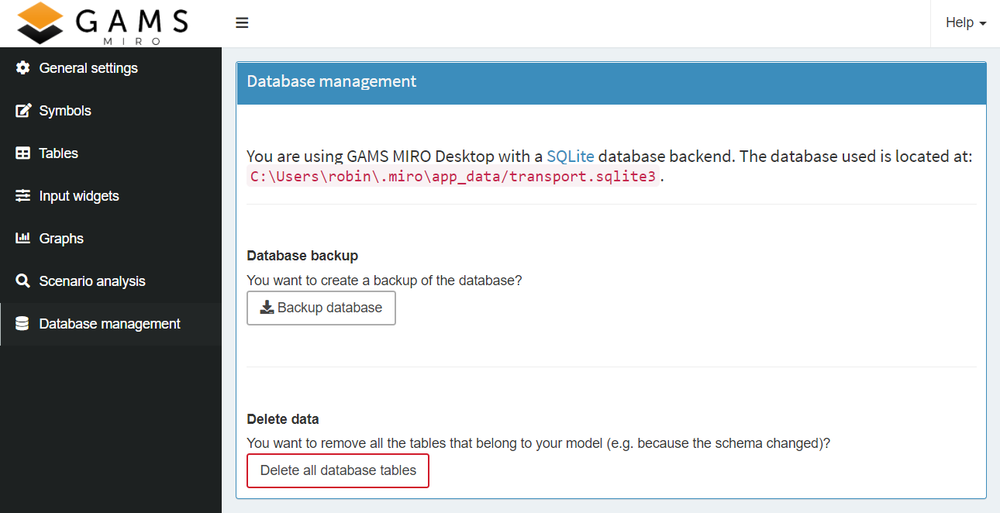

Deleting data from the database cannot be undone!
Database Management
Backup, Remove or Restore a Database
Here you can backup or clear the database of your MIRO app. In MIRO Desktop, the database can also be replaced by a previously saved one. The database path is displayed to the user.
Warning:
